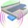
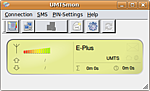
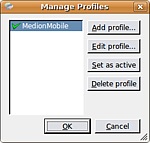
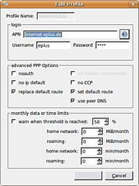
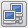

UMTSmon
Archivierte Anleitung
Dieser Artikel wurde archiviert, da er - oder Teile daraus - nur noch unter einer älteren Ubuntu-Version nutzbar ist. Diese Anleitung wird vom Wiki-Team weder auf Richtigkeit überprüft noch anderweitig gepflegt. Zusätzlich wurde der Artikel für weitere Änderungen gesperrt.
Zum Verständnis dieses Artikels sind folgende Seiten hilfreich:

UMTSmon  ist ein Programm zur Steuerung einer UMTS-Verbindung. Der unter Ubuntu vorinstallierte Network-Manager kann ebenfalls für UMTS benutzt werden, versagt aber z.B. bei manchen PCMCIA-Karten. Außerdem können mit dem Programm SMS empfangen und versandt werden. Wichtig ist noch die Möglichkeit, die PIN-Abfrage abzustellen, da diese den möglichen Betrieb moderner UMTS-Surf-Sticks mit dem Network-Manager blockieren kann.
ist ein Programm zur Steuerung einer UMTS-Verbindung. Der unter Ubuntu vorinstallierte Network-Manager kann ebenfalls für UMTS benutzt werden, versagt aber z.B. bei manchen PCMCIA-Karten. Außerdem können mit dem Programm SMS empfangen und versandt werden. Wichtig ist noch die Möglichkeit, die PIN-Abfrage abzustellen, da diese den möglichen Betrieb moderner UMTS-Surf-Sticks mit dem Network-Manager blockieren kann.

Wichtig zum Verständnis ist vielleicht noch der Hinweis, dass das Programm keine eigenen Kernelmodule bzw. Treiber enthält. Die zu verwendende UMTS-Hardware muss deshalb bereits vorher erkannt worden und einsatzbereit sein. Das heißt insbesondere, dass die Umschaltung vom Datenträger- in den Modem-Modus (typisch für USB UMTS-Hardware; siehe USB ModeSwitch) idealerweise schon bei der Initialisierung der Hardware erfolgen sollte. Leider wird trotzdem nicht jede UMTS-Hardware vom Programm dann auch erkannt.
Installation¶

Voraussetzungen¶
UMTSmon benötigt das folgende Paket, das zuerst installiert [1] werden muss:
libqt3-mt (nur bis Ubuntu 12.04)
 mit apturl
mit apturl
Paketliste zum Kopieren:
sudo apt-get install libqt3-mt
sudo aptitude install libqt3-mt
Manuell¶
Anschließend kann das Programm als Archiv (enthält eine vorkompilierte Binärdatei) von der Downloadseite  heruntergeladen werden. Mit dem Entpacken [2] und Kopieren der Datei umtsmon z.B. in den Ordner ~/bin/ für den angemeldeten Benutzer oder /usr/local/bin/ bei systemweiter Nutzung ist die Installation fast abgeschlossen.
heruntergeladen werden. Mit dem Entpacken [2] und Kopieren der Datei umtsmon z.B. in den Ordner ~/bin/ für den angemeldeten Benutzer oder /usr/local/bin/ bei systemweiter Nutzung ist die Installation fast abgeschlossen.
Hinweis!
Fremdsoftware kann das System gefährden.
Anmerkung: Die vorkompilierte Binärdatei ist nur mit 32-bit-Systemen verwendbar!
Der Quellcode ist in der Datei umtsmon-0.x.src.tar.gz enthalten. Eine Anleitung zum Selbstkompilieren ist im Abschnitt Links weiter unten zu finden.
Bei einer manuellen systemweiten Installation passt man die Zugriffsrechte [3] mit folgendem Befehl an:
sudo chmod 755 /usr/local/bin/umtsmon
Um die Programmsprache auf Deutsch zu ändern, muss der Inhalt des Ordners i18n aus der Archivdatei mit Root-Rechten nach /usr/share/umtsmon/translations/ kopiert werden. Zusätzlich sollte die Symboldatei umtsmon-128x128.png nach /usr/share/pixmaps/ kopiert werden.
Ein Programmstarter [4] wird nicht angelegt, ist aber im Archiv enthalten (umtsmon.desktop). Wenn dieser nach /usr/share/applications/ kopiert wird, kann das Programm im Menü über "Netzwerk -> Verwalte dein UMTS/GPRS-PCMCIA-Modem" oder mit
umtsmon
direkt aus dem Installationsordner gestartet [5] werden.
Fremdpakete¶
umtsmon_0.9-2_i386.deb
- speziell für den Asus Eee PC
Hinweis!
Fremdpakete können das System gefährden.
Konfiguration¶
Beim 1. Start werden einige Systemeinstellungen (Bild ) überprüft. Prinzipiell sollte kontrolliert werden, ob der aktuelle Benutzer "Internet-Verbindungen mit Modem aufbauen" und "Modems verwenden" darf (bzw. Mitglied der Gruppe dialout ist). Nur beim Einsatz einer UMTS PCMCIA-Karte muss noch das Zugriffsrecht auf pccardctl gesetzt werden:
sudo chmod u+s /sbin/pccardctl
Damit kann auch ein unprivilegierter Benutzer die PCMCIA-Karte nutzen.
Achtung!
Das unüberlegte Setzen des SUID-Bits kann die Systemsicherheit beeinträchtigen.
Wer UMTSmon mit UMTS USB-Hardware nutzen will, muss zusätzliche Programme wie USB ModeSwitch oder ozerocdoff benutzen, um diese Hardware vom Datenträger- in den Modem-Modus umzuschalten. Welches dieser Programme eingesetzt werden muss, hängt von der jeweiligen Hardware ab.
Um noch die Symbolleiste des Programms dem Systemstandard unter GNOME anzupassen, wird "System -> Einstellungen -> Qt3 Konfiguration" aufgerufen und der GUI Style "Polymer" ausgewählt (siehe auch KDE Anwendungen unter GNOME).
Benutzung¶

Vor der Einwahl ins UMTS-Netz muss zuerst ein Profil angelegt und als aktiv definiert werden. Über "Connection -> Manage Profiles" gelangt man in die Übersicht. Hier werden nun neue Profile angelegt, bestehende bearbeitet oder entfernt und ein Profil als Standard ("aktiv") markiert.
Profil anlegen¶
 Dazu müssen prinzipiell drei Angaben erfolgen:
APN
Benutzername
Kennwort
Weitere Hinweise sind in der Providertabelle A-Z zu finden. Zusätzlich muss evtl. noch im Hauptmenü unter "PIN-Settings" die PIN der SIM-Karte eingegeben werden - falls man diese nicht deaktiviert hat.
Einwahl¶
Nun steht dem Einsatz von UMTSmon nichts mehr in Weg. Für die aktuelle Verbindung wird u.a. - bei Volumentarifen wichtig - das Datenvolumen aufgezeichnet. Folgende Funktionen sind über die Symbolleiste verfügbar:
| Symbolleiste | ||
| Symbol | Bedeutung | Tastenkürzel |
| Profilverwaltung | Strg + P | |
|  | Verbinde mit dem Standardprofil | Strg + C |
| Verbindung trennen | Strg + D | |
 | neue SMS erstellen | Strg + S |
| öffnet einen Dialog mit Systeminformationen | ||
| Netzwerk-/Signal-/Statistik-Anzeige aktualisieren* | ||
* kann automatisch aktualisiert werden
Tastaturkürzel¶
Wenn die Programmsprache auf Deutsch geändert wurde, ändern sich auch die Tastenkürzel: aus Strg + P wird nur P , aus Strg + D wird nur D usw. Dies scheint ein Übersetzungsfehler zu sein.
Problembehebung¶
Siehe auch Mobiler Datentransfer/UMTS-Checkliste.
Allgemein¶
Zur Fehlerdiagnose sollte das Programm in einem Terminal-Fenster [6] aufgerufen werden. Dort finden sich dann entsprechende (englische) Fehlermeldungen, die die Problemquelle näher beschreiben. In diesem Zusammenhang kann es nützlich sein, das Programm mit
umtsmon -v 5
zu starten, um möglichst viele Details zu erhalten (Syntax: -v x, wobei x = 1 bis 5 sein kann).
Benutzerrechte¶
Wenn das Programm testweise mit sudo umtsmon gestartet wurde, werden der Eigentümer und die Rechte des Ordners ~/.umtsmon auf den Systemadministrator root übertragen. Anschließend scheitern alle weiteren Versuche, das Programm als normaler Benutzer zu starten. Abhilfe schafft das Zurücksetzen des Eigentümers und der Rechte auf den aktuellen Benutzer:
sudo chown -R <user.user> ~/.umtsmon
Für <user.user> ist der eigene Benutzername 2x in der Form Benutzername.Benutzername einzutragen.
Firefox¶
Wenn trotz bestehender Verbindung keine Webseiten angezeigt werden können, sollte in Firefox die Option "Datei -> Offline arbeiten" kontrolliert werden.
Netzwerk-/Signal-/Statistik-Anzeige¶
Bei mancher UMTS-Hardware kann es vorkommen, dass während einer bestehenden Verbindung die (automatische) Netzwerk-/Signal-/Statistik-Anzeige fehlt. Die Verbindung selbst wird dadurch aber nicht beeinträchtigt. Nach dem Trennen der Verbindung funktioniert alles wieder.
Links¶
UMTSmon aus dem Quelltext kompilieren - Forenbeitrag Ubuntuusers.de
UMTSmon für O2
 - Forenbeitrag Ubuntuusers.de
- Forenbeitrag Ubuntuusers.deUMTS per PCMCIA - Einsatz einer UMTS PCMCIA-Karte (von Option
) unter UbuntuUMTS per PCMCIA/GNOME PPP - Einwahl mit GNOME-PPP
- Erstellt mit Inyoka
-
 2004 – 2017 ubuntuusers.de • Einige Rechte vorbehalten
2004 – 2017 ubuntuusers.de • Einige Rechte vorbehalten
Lizenz • Kontakt • Datenschutz • Impressum • Serverstatus -
Serverhousing gespendet von